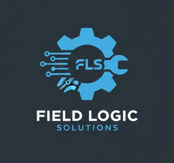

Mechatronics Engineering & Diesel Diagnostics
Based in Gerringong, Field Logic Solutions operates as a dual-track engineering firm. We provide high-fidelity on-site diesel diagnostics across the South Coast, Southern Highlands, and Southern Tablelands, while our AgTech design house serves clients Australia-wide.
Bespoke AgTech prototyping and mechatronics. From custom built sensor housings to self-healing infrastructure, we design and ship innovation across Australia.
Advanced troubleshooting and diagnostics. We service the South Coast, Southern Highlands, and Southern Tablelands to solve complex field failures.
Specialising in LoRaWAN and livestock tracking systems (RFID/ML). We bridge the gap between rugged mechanical hardware and digital intelligence.